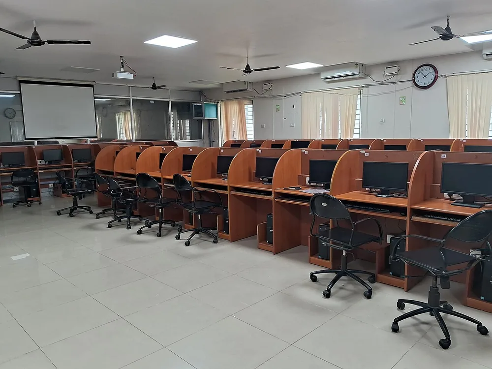

<!doctype html>
<html lang="ro">
<head>
<meta charset="utf-8">
<meta name="viewport" content="width=device-width, initial-scale=1, viewport-fit=cover">
<title>Evaluare sumativă: comunicarea prin Internet</title>
<meta name="description" content="Lecția 16, clasa a VI-a (TIC): te pregătești pentru lucrarea de la sfârșitul unității „Comunic prin Internet, în siguranță”. Afli ce fel de cerințe vin și cum se notează, cum lucrezi la părțile C, B și A și cum te verifici înainte să predai. Faci o probă de antrenament în căsuța de exersare din pagină, cu punctele pe părți, apoi o probă scurtă în Gmail-ul adevărat, cu contul tău de la școală.">
<link rel="preconnect" href="https://fonts.googleapis.com">
<link rel="preconnect" href="https://fonts.gstatic.com" crossorigin>
<link rel="stylesheet" href="https://fonts.googleapis.com/css2?family=Red+Hat+Display:wght@600;700;800&family=Karla:wght@400;500;700&family=Inconsolata:wght@500&display=swap&subset=latin-ext">
<link rel="stylesheet" href="../../../jocuri/_motor/motor.css">
<style>
:root{
  --desk:#EEF1F6; --paper:#FFFFFF; --paper2:#F3F5FA; --line:#D3DAE8;
  --ink:#17202E; --ink2:#4E5A70; --accent:#2A4F8F; --accentInk:#FFFFFF; --sel:#DCE5F6;
  --mark:#FFE08A; --markInk:#17202E; --ok:#1E7A4A; --okbg:#E2F3E8; --bad:#B3261E; --badbg:#FBE6E3;
  --fd:"Red Hat Display","Segoe UI",system-ui,sans-serif; --fb:"Karla","Segoe UI",system-ui,sans-serif; --fm:"Inconsolata",Consolas,monospace;
}
@media (prefers-color-scheme:dark){:root:not([data-theme="light"]){
  --desk:#10151F; --paper:#182131; --paper2:#1E2A41; --line:#34425D;
  --ink:#E8EEF8; --ink2:#AAB7CC; --accent:#A3C2FF; --accentInk:#10151F; --sel:#2A3B5E;
  --mark:#F2C94C; --markInk:#17202E; --ok:#6FD19A; --okbg:#173226; --bad:#FF8A80; --badbg:#3B1D1B;
}}
:root[data-theme="dark"]{
  --desk:#10151F; --paper:#182131; --paper2:#1E2A41; --line:#34425D;
  --ink:#E8EEF8; --ink2:#AAB7CC; --accent:#A3C2FF; --accentInk:#10151F; --sel:#2A3B5E;
  --mark:#F2C94C; --markInk:#17202E; --ok:#6FD19A; --okbg:#173226; --bad:#FF8A80; --badbg:#3B1D1B;
}
/* banda de sus: marginea unui plic de poștă aeriană (dungi roșii și albastre), cu o bifă de verificare — doar CSS */
.banda{display:flex;align-items:center;gap:10px;min-height:30px;padding:0 12px;
  background:repeating-linear-gradient(-45deg,#C8102E 0 9px,transparent 9px 18px,#2A4F8F 18px 27px,transparent 27px 36px)}
.banda .at{display:inline-grid;place-items:center;width:24px;height:24px;border-radius:50%;background:var(--paper);color:var(--accent);font:800 15px/1 var(--fd)}
h1{font-size:clamp(1.55rem,6vw,2.6rem);font-weight:800;letter-spacing:-.01em}
h1 .acc{color:var(--accent)}
h2{font-weight:700}
.nevoie{border-left:4px solid var(--accent);padding:6px 10px;background:var(--paper2);border-radius:0 6px 6px 0}
figure.captura.mica img{max-width:420px}
figure.captura figcaption a{display:inline-block;padding:7px 2px;margin:-7px 0}
.reading ol li,.reading ul li{margin:.2em 0}
.cod{font-family:var(--fm);background:var(--paper2);border:1px solid var(--line);border-radius:5px;padding:0 4px;word-break:break-all}
.parti{border-collapse:collapse;margin:.4em 0;font-size:.95rem}
.parti td,.parti th{border:1px solid var(--line);padding:4px 8px;text-align:left;vertical-align:top}
.plic{margin:.6em 0;border:1px solid var(--line);border-radius:10px;overflow:hidden;background:var(--paper);max-width:520px;font-size:.95rem}
.plic .r{padding:5px 10px;border-bottom:1px solid var(--line);word-break:break-word}
.plic .r span{display:inline-block;min-width:4.6em;color:var(--ink2)}
.plic .t{padding:8px 10px;white-space:pre-line;word-break:break-word}
.plic .a{padding:6px 10px;border-top:1px solid var(--line);background:var(--paper2);font-size:.9rem;word-break:break-all}
/* regula 20: la „găsește greșelile”, și cuvintele scurte („de”, „pa”) au o țintă de cel puțin 32 px lățime */
.hunt .tk{min-width:32px;text-align:center}
details.verif{margin:.5em 0;border:1px solid var(--line);border-radius:8px;background:var(--paper2)}
details.verif summary{cursor:pointer;font-weight:700;padding:8px 12px;min-height:40px;box-sizing:border-box;list-style-position:inside}
details.verif>div{padding:0 12px 10px}
</style>
</head>
<body>
<script src="../../../jocuri/_motor/motor.js"></script>
<script src="../../_sim/siguranta-pc.js"></script>
<script src="../../_sim/cont-sigur.js"></script>
<script src="../../_sim/posta-gmail.js"></script>
<script src="../../_sim/posta-gmail-scrie.js"></script>
<script src="../../_sim/posta-gmail-dosare.js"></script>
<script src="../../_sim/eval-internet-vi.js"></script>
<script>
/* ======================================================================================================
   Lecția VI · M3 · nr. 16 — „Evaluare sumativă: comunicarea prin Internet” (VI-U2, CS.1.3). NU predă nimic nou.
   Documentele profesorului: Proiectul_unitatii_VI-U2.md (ora 16: „test_unitate, barem”); activitati_lectii_V_VI.json
   („Probă practică: compunerea unui mesaj cu atașament pentru o situație dată, organizarea mesajelor primite, plus întrebări
   scurte despre siguranță și date personale.” — resurse: „test practic de unitate, barem pe niveluri”); SISTEM_EVALUARE.md
   §4.1-4.5 și REGULA_NOUA.md (C 40 / B 30 / A 20 / +10; nota = punctaj : 10; nivelul din notă). Testul VI-U2 NU există încă:
   pagina nu-l inventează; proba din atelier e a PAGINII, spusă ca antrenament (surse.md).
   Simulatoarele, NEATINSE: siguranta-pc.js (VI/11), cont-sigur.js (VI/12), posta-gmail.js (VI/13), posta-gmail-scrie.js
   (VI/14), posta-gmail-dosare.js (VI/15). Extensia nouă: lectii/_sim/eval-internet-vi.js (proprietar: lecția aceasta).
   SIGURANȚA: conturile, adresele, persoanele (aceleași ca în lecțiile 14-15), fișierele și mesajele sunt INVENTATE
   (domeniile .test sunt rezervate pentru exemple); ce tastează elevul nu se salvează și nu pleacă nicăieri.
   Nicio afirmație nouă despre Gmail sau Windows: fiecare vine din afirmatii.json al lecției care a predat-o (afirmatii.json).
   ====================================================================================================== */
const CONT=['Măsuri de siguranță în utilizarea Internetului (de exemplu, utilizarea programelor de tip antivirus)',
  'Protecția datelor personale în comunicarea prin Internet(de exemplu, construcția și protejarea parolelor, identitatea virtuală)',
  'Poșta electronică (email): conturi, adresă de poștă electronică, structura unui mesaj transmis prin poșta electronică',
  'Operații specifice cu mesaje electronice: deschidere, compunere, trimitere, răspuns, redirecționare, atașarea unui fișier',
  'Dosare cu mesaje, agendă de utilizatori',
  'Reguli de comunicare în mediul online (netichetă): formule de adresare, reguli de scriere'];
const C_=s=>`<span class="cod">${s}</span>`;
const esc=s=>String(s).replace(/&/g,'&amp;').replace(/</g,'&lt;').replace(/>/g,'&gt;');
/* trimiterile: legătura directă la pasul lecției care l-a predat (motorul: ?vezi=pN, N ca în bara P1…Pn) */
const TITLURI={
 1:{6:'Lucrarea și nota ei',7:'Munca ta pe LearningHub intră în notă',8:'Nivelul se citește din notă'},
 11:{2:'Programe rău-intenționate',3:'Pe unde intră în calculator',4:'Fereastra care te sperie: o închizi',6:'Verifici un stick sau un fișier'},
 12:{2:'Datele personale: ce sunt și ce nu publici',3:'Parola puternică: fraza-parolă',4:'Parola rămâne a ta'},
 13:{2:'Contul și adresa de e-mail',3:'Intri în cont: conectarea la Gmail',4:'Pe calculatorul comun: refuzi salvarea parolei, ieși din cont',6:'Părțile unui mesaj'},
 14:{2:'Scrii un mesaj nou',3:'Verifici adresa și trimiți',4:'Atașezi un fișier',5:'Răspunzi la un mesaj',6:'Redirecționezi un mesaj'},
 15:{2:'Etichetele: un fel de dosare pentru mesaje',3:'Pui mesajele sub etichetă și le găsești',4:'Agenda: adresele oamenilor cu care îți scrii',5:'Neticheta: cum scrii un mesaj politicos',6:'Neticheta: ce dai mai departe și cui'}};
const L=(n,p)=>`<a href="../${n===1?'m1':'m2'}-l${String(n).padStart(2,'0')}/?vezi=p${p}" target="_blank" rel="noopener">lecția ${n}, pasul „${TITLURI[n][p]}”</a>`;
const plic=(randuri,corp,atas)=>`<div class="plic">${randuri.map(([e,v])=>`<div class="r"><span>${e}</span> ${esc(v)}</div>`).join('')}<div class="t">${esc(corp)}</div>${atas?`<div class="a">📄 ${esc(atas)}</div>`:''}</div>`;

/* ---------------- persoanele, conturile, fișierele și mesajele inventate (aceleași nume ca în lecțiile 14-15) ---------------- */
const D=SimPostaGmail.DOMENIU;                      // scoala-exemplu.test
const om=(nume,adresa)=>({nume,adresa});
const DARIA={adresa:'daria.lungu@'+D,nume:'Daria Lungu',parola:'Ploaie5!Ceas#Fag'};
const TUDOR={adresa:'tudor.manole@'+D,nume:'Tudor Manole',parola:'Morcov3#Pod!Vant'};
const PROF=om('Paul Neagu','paul.neagu@'+D), DIRIG=om('Carmen Voicu','carmen.voicu@'+D);
const LUCA=om('Luca Zamfir','luca.zamfir@'+D), ILINCA=om('Ilinca Toader','ilinca.toader@'+D), IRINA=om('Irina Cazacu','irina.cazacu@'+D);
const MAMA_D=om('Mama','mama.dariei@posta-exemplu.test'), MAMA_T=om('Mama','mama.lui.tudor@posta-exemplu.test');
const EU_D=om(DARIA.nume,DARIA.adresa), EU_T=om(TUDOR.nume,TUDOR.adresa);
const SEMN_PROF='Paul Neagu\nProfesor de informatică', SEMN_DIRIG='Carmen Voicu\nDiriginta clasei a VI-a A';
const KB=1024, MB=1024*KB;
const PROGRAM={nume:'Program_excursie.pdf',marime:96*KB}, FISA={nume:'Fisa_concurs.pdf',marime:180*KB}, PROG_M={nume:'Program_muzeu.pdf',marime:92*KB};
const ACORD='Acord_excursie.pdf', VUL_T='Vulcanii_6A_Manole.pptx', COMP='Compunere_iarna.docx';
/* fereastra Deschidere a Dariei: fișierele implicite ale căsuței (posta-gmail-scrie.js) + acordul pentru excursie */
const FIS_D={'Documente':[{nume:'TIC_6A',folder:[{nume:'Anotimp_6A_Lungu.pptx',marime:1258291},{nume:'Plante_6A_Lungu.pptx',marime:2202010},{nume:'Vulcanii_6A_Lungu.pptx',marime:3670016}]},
  {nume:ACORD,marime:140*KB},{nume:COMP,marime:24*KB}],
 'Descărcări':[{nume:'Fisa_concurs.pdf',marime:180*KB},{nume:'Harta_excursiei.png',marime:850*KB},{nume:'Film_serbare.mp4',marime:380*MB}]};
/* parolele scrise în pagină (acum le știe toată lumea): nu trec drept „inventate” la exercițiile cu parolă */
const PUBLICATE=['Ploaie5!Ceas#Fag','Morcov3#Pod!Vant','Ghete6#Lac!Pensula','Bufnita4?Pod#Cana',
  'Pian4!Nor#Lebada','Melc4?Cer!Vioara','Mar7!Tren#Galben','Zmeu9?Lingura#Port','Stea4!Munte#Pahar','Cana8#Zebra!Somn',
  'Lampa7?Nor#Vioara','Ghinda3!Toba#Ceainic','Cana8#Pod!Vulpe','Ceas3?Lup#Fereastra','Melc5!Nor?Trompeta','Ploaie9#Cartof!Vis'];
const NU_EX=sol=>({c:'nuExemplu',v:PUBLICATE.filter(x=>x!==sol)});

/* căsuța lui Tudor (pașii și întrebările) */
const M_EXCURSIE_T={id:'excursie',lista:'primite',de:DIRIG,catre:[EU_T],subiect:'Programul excursiei',data:'11 ian.',ora:'12:30',
  corp:'Dragă Tudor,\nÎți trimit programul excursiei de sâmbătă. Arată-l și părinților.',semnatura:SEMN_DIRIG,atasate:[PROGRAM]};
const M_CONCURS_T={id:'concurs',lista:'primite',de:PROF,catre:[EU_T],subiect:'Vii la concurs?',data:'12 ian.',ora:'08:10',
  corp:'Bună, Tudor,\nVii marți, la ora 13, la concursul de informatică? Răspunde-mi până mâine.',semnatura:SEMN_PROF};
const M_FISA_T={id:'fisa',lista:'primite',de:PROF,catre:[EU_T],subiect:'Fișa pentru concurs',data:'10 ian.',ora:'12:05',citit:true,
  corp:'Bună, Tudor,\nÎți trimit fișa de exerciții pentru concurs. Rezolv-o până marți.',semnatura:SEMN_PROF,atasate:[FISA]};
const M_MINGE_T={id:'minge',lista:'primite',de:LUCA,catre:[EU_T],subiect:'Mingea de fotbal',data:'9 ian.',ora:'15:10',citit:true,corp:'Salut! Mâine aduci mingea?',semnatura:'Luca'};
const BAZA_T=[M_CONCURS_T,M_EXCURSIE_T,M_FISA_T,M_MINGE_T];
const SIM_T=o=>Object.assign({start:'casuta',cont:TUDOR,mesaje:BAZA_T,agenda:[LUCA,IRINA,MAMA_T]},o||{});

/* căsuța Dariei (atelierul: proba de antrenament „Excursia”) */
const M_MUZEU={id:'muzeu',lista:'primite',de:DIRIG,catre:[EU_D,LUCA,ILINCA],subiect:'Excursia la muzeu',data:'12 ian.',ora:'12:30',
  corp:'Dragi copii,\nVineri mergem la muzeu. Programul e atașat. Trimiteți-mi până joi acordul semnat de părinți.',semnatura:SEMN_DIRIG,atasate:[PROG_M]};
const M_ORA={id:'ora',lista:'primite',de:DIRIG,catre:[EU_D],subiect:'Ora de plecare la muzeu',data:'13 ian.',ora:'09:15',citit:true,
  corp:'Dragă Daria,\nPlecăm vineri la ora 8, din fața școlii.',semnatura:SEMN_DIRIG};
const M_JOC={id:'joc',lista:'primite',de:LUCA,catre:[EU_D],subiect:'Un fișier ciudat',data:'13 ian.',ora:'17:40',
  corp:'Salut!\nAm primit un mesaj de la o adresă pe care n-o știu, cu fișierul Joc_gratis.exe atașat. Să-l deschid?',semnatura:'Luca'};
const M_PROIECT_D={id:'proiect',lista:'primite',de:LUCA,catre:[EU_D],subiect:'Proiectul la geografie',data:'11 ian.',ora:'16:40',citit:true,corp:'Salut! Tu aduci harta pentru proiect?',semnatura:'Luca'};
const M_BUNICA={id:'bunica',lista:'trimise',de:EU_D,catre:[om('Bunica Ana','bunica.ana@posta-exemplu.test')],subiect:'Mulțumesc pentru fular!',data:'10 ian.',ora:'19:15',citit:true,
  corp:'Dragă bunico,\nFularul e foarte cald. Îl port în fiecare zi!\nDaria'};
const M_SPAM={id:'premiu',lista:'spam',de:om('Premii Rapide','premii@castiga-acum.test'),catre:[EU_D],subiect:'Ai câștigat o tabletă!!!',data:'11 ian.',ora:'03:12',
  corp:'Scrie-ne parola contului în 10 minute ca să primești premiul.'};
const BAZA_D=[M_JOC,M_ORA,M_MUZEU,M_PROIECT_D,M_BUNICA,M_SPAM];
const SIM_D=o=>Object.assign({start:'casuta',cont:DARIA,mesaje:BAZA_D,fisiere:FIS_D,agenda:[LUCA,ILINCA]},o||{});

const M_=o=>Object.assign({t:'dosare'},o);
const P_=o=>Object.assign({t:'probaposta'},o);
/* testul `trimis` al căsuței cere ca mesajul să fi plecat CU tot ce cer testele de conținut; în proba de antrenament, punctele
   lui se dau dacă mesajul a plecat (cePuncte), iar ce lipsește din el se pierde doar la testul lui (eval-internet-vi.js) */
const TRIMIS_TOT='Mesajul a plecat (Trimite), cu tot ce cer testele de mai sus';

/* ---------------- proba de antrenament „Excursia” (atelierul): 8 cerințe, punctele pe cerințe = ale paginii ---------------- */
EvalInternet.configureaza({titlu:'Proba de antrenament „Excursia”',oficiu:10,
  parti:{C:{nume:'De bază',max:40},B:{nume:'Consolidat',max:30},A:{nume:'Avansat',max:20}},
  itemi:[{id:'C1',parte:'C',nume:'stickul de la coleg',puncte:5},{id:'C2',parte:'C',nume:'parola puternică',puncte:5},
   {id:'C3',parte:'C',nume:'intri în cont și citești',puncte:10},{id:'C4',parte:'C',nume:'mesajul cu acordul, după pași',puncte:20},
   {id:'B1',parte:'B',nume:'programul ajunge la mama',puncte:15},{id:'B2',parte:'B',nume:'mesajele excursiei, în ordine',puncte:15},
   {id:'A1',parte:'A',nume:'fișierul ciudat al lui Luca',puncte:12},{id:'A2',parte:'A',nume:'adresa altcuiva',puncte:8}]});

const LECTIA={
 t:'Evaluare sumativă: comunicarea prin Internet',lectii:[11,12,13,14,15,16],continuturi:CONT,final:true,
 obiectiv:'știi ce fel de cerințe vin la lucrare și cum se notează, lucrezi la fiecare parte (C cu pașii dați, B singur, A cu regula și motivul), te verifici înainte să predai și faci o probă de antrenament.',
 pasi:[
  /* ---------- pasul 1: la ce folosește ---------- */
  {t:'La ce folosește',
   text:`<p>Lecția 16 te pregătește pentru <mark>lucrarea</mark> de la sfârșitul unității „Comunic prin Internet, în siguranță”, adică a lecțiilor 11-15. Lucrarea aduce o notă. Pe cea adevărată ți-o dă profesorul, la oră.</p>
<p>Aici afli ce fel de cerințe vin și cum se notează, cum lucrezi la fiecare parte și cum te verifici înainte să predai. Apoi faci o <mark>probă de antrenament</mark>: cu cerințele paginii, nu cu ale lucrării. E ca la înot: la antrenament înoți cu cronometrul, ca să știi unde pierzi timp; concursul îl înoți în ziua lui.</p>
<figure class="captura mica"><a href="../../v/m1-l02/img/laborator.webp" target="_blank"></a><figcaption>Lucrarea o dai la calculator, în laborator. Fotografie: Kiruthikapalani, <a href="https://creativecommons.org/licenses/by-sa/4.0" target="_blank" rel="noopener">CC BY-SA 4.0</a>, <a href="https://commons.wikimedia.org/wiki/File:Computer_Laboratory.jpg" target="_blank" rel="noopener">Wikimedia Commons</a> (micșorată).</figcaption></figure>
<p class="nevoie"><b>Ai nevoie de:</b> lecțiile 11-15 (siguranța și antivirusul, datele personale și parola, contul și mesajul, operațiile cu mesaje, etichetele, agenda și neticheta) și lecția 1, pașii despre notă. Pașii de mai jos te trimit la fiecare.</p>`},
  /* ---------- pasul 2: cerințele și nota ---------- */
  {t:'Ce fel de cerințe vin și cum se notează',
   text:`<p>După planul profesorului, lucrarea e o <b>probă practică</b> la calculator: scrii un mesaj cu un fișier atașat, pentru o situație dată, și pui în ordine mesajele primite. Plus întrebări scurte despre siguranță și datele personale. Testul exact îl primești la oră.</p>
<p>Cerințele stau pe trei părți, ca la ${L(1,6)}:</p>
<table class="parti"><tr><td><b>C</b> · De bază</td><td>cu pașii dați</td><td>40 p</td></tr><tr><td><b>B</b> · Consolidat</td><td>singur, într-o situație cunoscută</td><td>30 p</td></tr><tr><td><b>A</b> · Avansat</td><td>situație nouă și explicația ta</td><td>20 p</td></tr></table>
<p>Plus 10 din oficiu. Nota = punctaj : 10. Nivelul se citește din notă (${L(1,8)}).</p>`,
   exemplu:`<p>Ana ia la lucrare 34 de puncte la C, 22 la B și 11 la A.</p>
<ol><li>Punctajul: 34 + 22 + 11 + 10 = 77.</li><li>Nota: 77 : 10 = 7,7, deci 8, adică nivelul Consolidat.</li><li>A pierdut cele mai multe puncte la A: 9 din 20.</li></ol>
<p>La lucrarea de modul, în catalog intră și munca ta de pe LearningHub: ${L(1,7)}.</p>`,
   altfel:`<p>E ca la un concurs de sport cu trei probe. Prima valorează 40 de puncte, a doua 30, a treia 20, iar 10 puncte le primește oricine vine la concurs. La final aduni punctele tuturor probelor și împarți totalul la 10. Cine strânge 77 de puncte are 7,7, adică nota 8.</p>`,
   incearca:{t:'choice',q:'Tudor ia la lucrare 32 de puncte la partea C, 21 la partea B și 12 la partea A, plus 10 din oficiu. Ce notă are?',o:['6','7','8','9'],ok:2,amesteca:false,
     ajutor:'Adună C, B, A și cele 10 din oficiu, apoi împarte la 10. Ce faci când iese ,5?',
     why:'Punctajul e 32 + 21 + 12 + 10 = 75. Apoi 75 : 10 = 7,5, iar la ,5 rotunjești în sus, în favoarea ta: nota 8.'},
   inca:[
    {t:'choice',q:'Sara ia 22 de puncte la partea C, 14 la partea B și 4 la partea A, plus 10 din oficiu. Ce nivel are, după regula profesorului?',o:['În formare','De bază','Consolidat','Avansat'],ok:1,amesteca:false,
     ajutor:'Întâi nota: punctajul, cu cele 10 din oficiu, împărțit la 10. Apoi caută nota în lista nivelurilor.',
     why:'Punctajul e 22 + 14 + 4 + 10 = 50, iar 50 : 10 = 5, deci nota 5. Nota 5 înseamnă De bază.'},
    {t:'classify',q:'Pe ce parte a lucrării stă fiecare cerință?',cats:['C · cu pașii dați','B · singur, situație cunoscută','A · situație nouă, cu explicație'],
     items:[['„Apasă Scrie. În Către scrie adresa dirigintei. În Subiect scrie «Acordul». Apasă Trimite.”',0],
      ['„Trimite-i dirigintei acordul semnat de părinți, atașat.”',1],
      ['„Răspunde-i profesorului dacă vii la concurs.”',1],
      ['„Un prieten îți scrie că cineva i-a cerut parola. Răspunde-i ce să facă și de ce.”',2]],
     ajutor:'Cerința îți dă pașii? E C. Îți spune doar ce trebuie să se întâmple? E B. E o situație nouă, în care spui și de ce? E A.',
     why:'Cu pașii scriși e partea C. Fără pași, într-o situație ca la clasă, e B. O situație nouă, în care alegi regula și spui motivul, e A.'}
   ]},
  /* ---------- pasul 3: partea C ---------- */
  {t:'Partea C: cu pașii dați',
   text:`<p>La partea <b>C</b> cerința îți dă pașii, ca la clasă: „Apasă Scrie. În Către scrie… În Subiect scrie…”. În proba de antrenament, tot la C sunt și întrebările scurte despre siguranță și datele personale.</p>
<p>Cum lucrezi:</p>
<ol><li>citești toată cerința o dată;</li><li>faci pașii în ordine, unul câte unul;</li><li>scrii exact ce cere: adresa literă cu literă, subiectul, rândurile;</li><li>la final, treci încă o dată prin pași și te uiți că i-ai făcut pe toți.</li></ol>
<p>Ai uitat un gest? Recitește-l: ${L(13,3)}, ${L(14,2)}, ${L(14,4)}.</p>`,
   exemplu:`<p>Cerința: „Intră în cont, nu salva parola, deschide mesajul dirigintei, ieși din cont.” Tudor o citește toată. Apoi face pe rând: adresa, Înainte, parola, Înainte; ✕ la întrebarea browserului; clic pe mesaj; Profil, Deconectează-te. La final trece iar prin cerință: a făcut toți cei patru pași.</p>`,
   altfel:`<p>E ca o rețetă de clătite. Citești toată rețeta, apoi pui ingredientele în ordinea scrisă, câte unul. La sfârșit te uiți încă o dată pe rețetă, să vezi că n-ai sărit niciunul.</p>`,
   incearca:M_({q:`Cerința, cu pașii dați, în căsuța de exersare (un desen al Gmail-ului). Contul inventat al lui Tudor e deschis. 1) Deschide mesajul dirigintei „Programul excursiei”. 2) Deschide apoi mesajul profesorului „Vii la concurs?”. 3) Ieși din cont. Testele se bifează singure.`,
     sim:SIM_T(),
     teste:[{c:'deschis',v:'excursie',d:'Ai deschis mesajul „Programul excursiei”'},{c:'deschis',v:'concurs',d:'Ai deschis mesajul „Vii la concurs?”'},{c:'iesit'}],
     drum:[['deschide','excursie'],['deschide','concurs'],['iesi']],gresit:{sari:2},
     ajutor:'Pe rând: clic pe „Programul excursiei”; Mesaje primite, în stânga, și clic pe „Vii la concurs?”; Profil (cerculețul din dreapta sus), Deconectează-te.',
     arata:'„Programul excursiei” → Mesaje primite → „Vii la concurs?” → Profil → Deconectează-te.',
     why:'Ai făcut cei trei pași, în ordine, și i-ai verificat. Așa lucrezi la partea C.'}),
   inca:[
    {t:'fereastra',falsa:'virus',q:'O întrebare scurtă, de făcut: mai jos e un browser simulat, iar în fila nouă a apărut o fereastră falsă care te sperie. Închide-o cum ai învățat, cu mouse-ul (pe telefon, cu degetul). Aici nu folosi Ctrl+W: ar închide chiar lecția. Dacă l-ai apăsat totuși și apare întrebarea „Părăsiți site-ul?”, apasă Anulați: lecția rămâne deschisă.',
     ajutor:'Nu apăsa nimic în caseta din pagină, nici „Curăță acum”, nici „Anulare”. Sus, la fila cu avertismentul, apasă ✕ de lângă numele ei.',
     why:'Ai închis fila de sus, cu ✕ de pe ea, fără să apeși nimic în pagina falsă. Apoi îi spui unui adult.'},
    {t:'parola',q:'Încă o întrebare de făcut: inventează o frază-parolă după metodă (3 cuvinte fără legătură cu tine, lipite, fiecare cu literă mare, cu cifre și simboluri între ele). Testele se bifează cât scrii. Nu scrie parola ta adevărată.',
     teste:['lung15','mari','mici','cifre','simbol','cuvinte3','neghicita',NU_EX('Bufnita4?Pod#Cana')],start:'',solutie:'Bufnita4?Pod#Cana',gresit:'tudor2014',
     ajutor:'Alege trei cuvinte, de exemplu un animal, un obiect și o unealtă. Scrie-le lipite, cu literă mare, și pune între ele o cifră și un simbol. Numără: cel puțin 15?',
     why:'Ai o frază-parolă: lungă, amestecată și ușor de ținut minte. Pe cea adevărată o faci tot așa, alta, și o știi doar tu și părinții tăi.'},
    {t:'choice',q:'Cineva pe care nu-l cunoști îi scrie lui Tudor într-un joc: „Spune-mi la ce școală ești și îți dau monede.” Ce face Tudor?',
     o:['Nu-i spune nimic și arată mesajul unui adult','Îi spune doar școala, nu și clasa, ca să fie prudent','Îi spune școala, ca să primească monedele promise','Îi cere întâi monedele și abia apoi îi spune școala'],ok:0,
     ajutor:'Lecția 12: școala și clasa sunt date personale?',
     why:'Școala e o dată personală: după ea, un necunoscut te poate găsi. Nu le dai cuiva pe care nu-l cunoști în viața reală, oricât de frumos ți le cere.'}
   ]},
  /* ---------- pasul 4: partea B ---------- */
  {t:'Partea B: singur, într-o situație cunoscută',
   text:`<p>La partea <b>B</b> cerința spune doar <b>ce</b> trebuie să se întâmple: „Trimite-i profesorului prezentarea ta.” Pașii îi alegi tu, din ce ai învățat:</p>
<ol><li>Alegi butonul: mesaj nou (<b>Scrie</b>), înapoi la cine ți-a scris (<b>Răspunde</b>) sau mai departe, cu fișierele lui (<b>Redirecționează</b>).</li>
<li>Îți spui ce trebuie să aibă mesajul: Către, subiect clar, salutul, rândul tău, semnătura, fișierul.</li>
<li>Faci, citești, trimiți.</li></ol>
<p>În proba de antrenament, tot la B pui în ordine mesajele primite, cu etichete (${L(15,2)}, ${L(15,3)}).</p>`,
   exemplu:`<p>Cerința: „Răspunde-i profesorului dacă vii la concurs.” Tudor se gândește: răspunsul merge înapoi la cine i-a scris, deci <b>Răspunde</b>. Deschide mesajul „Vii la concurs?” și apasă Răspunde. Către e deja completat. Scrie: „Bună ziua, domnule profesor, / Da, vin marți. / Tudor Manole”. Citește, apoi apasă Trimite.</p>
<p>Butoanele, încă o dată: ${L(14,5)}, ${L(14,6)}.</p>`,
   altfel:`<p>E ca atunci când mama îți spune „Du-i bunicii borcanul cu dulceață.” Nu-ți spune pe unde să mergi și ce să-i spui bunicii: drumul și vorbele le alegi tu, din ce știi deja.</p>`,
   incearca:M_({q:'Singur: scrie-i Irinei (e în agenda lui Tudor) un mesaj nou, cu adresa luată din agendă: o întrebi dacă a terminat harta pentru proiectul la geografie. Subiect clar, salut, semnătura.',
     sim:SIM_T(),mesaj:{tip:'nou'},
     teste:[{c:'dinAgenda',v:IRINA.adresa},{c:'catre',v:IRINA.adresa},{c:'subiect',v:{min:2}},{c:'salut'},{c:'semnatura',v:'Tudor'},{c:'trimis'}],
     drum:[['scrie'],['sugestie','iri',IRINA.adresa],['subiect','Harta pentru proiect'],['corp','Salut, Irina!\nAi terminat harta?\nTudor'],['trimite']],
     gresit:{drum:[['scrie'],['catre','irina.cazac@'+D],['subiect','Harta pentru proiect'],['corp','Salut, Irina!\nAi terminat harta?\nTudor'],['trimite']]},
     ajutor:'Mesaj nou: Scrie. În Către tastează primele litere ale numelui („iri”) și apasă pe sugestie. Apoi subiectul, salutul, întrebarea, semnătura, Trimite.',
     arata:'Scrie → Către: „iri” → sugestia „Irina Cazacu” → Subiect: „Harta pentru proiect” → „Salut, Irina!” / întrebarea / „Tudor” → Trimite.',
     why:'Ai ales singur drumul: un mesaj nou, deci Scrie. Adresa luată din agendă e scrisă întreagă și fără greșeli: mesajul ajunge la Irina, nu la un străin.'}),
   inca:[
    M_({q:`Singur, fără pași: Tudor trebuie să-i trimită profesorului Paul Neagu (${C_(PROF.adresa)}) prezentarea lui despre vulcani, ${C_(VUL_T)} (e în Documente › TIC_6A). Mesajul trebuie să fie bun de citit și să ajungă cu fișierul. Contul lui Tudor e deschis.`,
     sim:SIM_T(),mesaj:{tip:'nou'},
     teste:[{c:'catre',v:PROF.adresa},{c:'subiect',v:{cuvinte:['vulcan*','prezentar*'],despre:'prezentare'}},{c:'salut'},{c:'semnatura',v:'Tudor'},{c:'atasat',v:VUL_T},{c:'trimis'}],
     drum:[['scrie'],['catre',PROF.adresa],['subiect','Prezentarea despre vulcani'],['corp','Bună ziua, domnule profesor,\nVă trimit prezentarea mea despre vulcani.\nTudor Manole'],['ataseaza',VUL_T],['trimite']],
     gresit:{sari:4},
     ajutor:'Mesaj nou: Scrie. Apoi Către, un subiect despre prezentare, salutul, un rând, semnătura, agrafa 📎 cu fișierul și Trimite.',
     arata:'Scrie → Către: paul.neagu@scoala-exemplu.test → Subiect: „Prezentarea despre vulcani” → „Bună ziua, domnule profesor,” / un rând / „Tudor Manole” → 📎 → Documente › TIC_6A › Vulcanii_6A_Manole.pptx → Deschidere → Trimite.',
     why:'Ai ales singur drumul: Scrie, apoi tot ce trebuie să aibă mesajul, cu fișierul văzut jos înainte de Trimite.'}),
    M_({q:'Singur: pune în ordine mesajele primite de Tudor. Fă o etichetă „Concurs” și pune sub ea doar cele două mesaje ale profesorului despre concurs. Apoi deschide eticheta, ca să vezi doar mesajele ei.',
     sim:SIM_T(),
     teste:[{c:'eticheta',v:'Concurs'},{c:'etichetat',v:{ids:['concurs','fisa'],et:'Concurs'},d:'Cele două mesaje ale profesorului despre concurs au eticheta „Concurs”'},
      {c:'neetichetat',v:{ids:['excursie','minge'],et:'Concurs'},d:'Mesajele care nu sunt despre concurs nu au eticheta „Concurs”'},{c:'vazutEticheta',v:'Concurs'}],
     drum:[['eticheta-noua','Concurs'],['eticheteaza',['concurs','fisa'],'Concurs'],['eticheta','Concurs']],
     gresit:{drum:[['eticheta-noua','Concurs'],['eticheteaza',['concurs'],'Concurs'],['eticheta','Concurs']]},
     ajutor:'+ de lângă Etichete → „Concurs” → Creează. Bifezi „Vii la concurs?” și „Fișa pentru concurs”, apoi 🏷 → Concurs → Aplică. La final, clic pe „Concurs”, în stânga.',
     arata:'+ lângă Etichete → „Concurs” → Creează → bifezi „Vii la concurs?” și „Fișa pentru concurs” → 🏷 → Concurs → Aplică → clic pe „Concurs”.',
     why:'Mesajele despre concurs sunt sub eticheta lor și au rămas și în Mesaje primite: eticheta nu mută mesajul.'}),
    {t:'classify',q:'Profesorul îl întreabă pe Tudor, în mesajul „Vii la concurs?”, dacă vine la concurs. Tudor vine și îi răspunde cu <b>Răspunde</b>. Care rânduri îi spun profesorului, limpede, că Tudor vine? Pune fiecare rând la locul lui. Citește-l până la capăt: un „da” de la început nu înseamnă că vine.',
     cats:['Spune că vine','Nu spune că vine'],
     items:[['„Da, vin marți la concurs.”',0],
      ['„Da, nu pot veni.”',1],
      ['„Nu știu dacă da.”',1],
      ['„Vin sigur, mulțumesc pentru invitație!”',0],
      ['„Da\' nu pot, am meci.”',1],
      ['„Nu vin, da?”',1]],
     ajutor:'La fiecare rând întreabă-te: dacă profesorul citește doar rândul acesta, știe sigur că Tudor vine? Un „da” sau un „vin” lângă un „nu” spune altceva.',
     why:'Profesorul află limpede că Tudor vine doar din „Da, vin marți la concurs.” și „Vin sigur, mulțumesc pentru invitație!”. Celelalte au un „da” la început sau la sfârșit, dar spun că nu vine sau că nu știe. La lucrare, după ce scrii rândul, îl citești încă o dată, până la capăt: spune ce vrei să afle profesorul? Abia apoi Trimite.'}
   ]},
  /* ---------- pasul 5: partea A ---------- */
  {t:'Partea A: situație nouă, cu explicație',
   text:`<p>La partea <b>A</b> vine o situație pe care n-ai văzut-o așa la clasă. N-o recunoști, dar ai regulile: o aplici pe cea potrivită și spui <b>de ce</b>.</p>
<ol><li>Spui ce e în situație: cine scrie? ce cere? are un fișier?</li>
<li>Cauți regula care se potrivește. De exemplu: parola o știi doar tu și părinții tăi (${L(12,4)}); fișierele de la necunoscuți nu le deschizi (${L(14,4)}); adresa altuia n-o dai fără acordul lui (${L(15,6)}).</li>
<li>Faci ce cere regula și scrii motivul: „…, pentru că…”.</li></ol>`,
   exemplu:`<p>Un coleg îi scrie lui Tudor: „Cineva mi-a cerut parola contului ca să-mi dea un premiu. S-o dau?” Situația e nouă: nu lui Tudor i se cere parola. Regula: un mesaj care cere parola e o capcană. Tudor îi răspunde: „Nu i-o da, pentru că e o capcană: cine o află intră în contul tău. Arată mesajul unui adult.”</p>`,
   altfel:`<p>E ca la un drum nou spre o casă unde n-ai mai fost: n-ai mai mers pe strada aceea, dar regulile le știi. La trecerea de pietoni te uiți în stânga și în dreapta, pentru că mașinile pot veni din ambele părți.</p>`,
   incearca:{t:'choice',q:'Te așezi la calculatorul din laborator. Gmail-ul colegului de dinainte e încă deschis, cu un mesaj necitit: „Nota ta la test”. Ce faci și de ce?',
     o:['Nu-l citesc și apăs Profil, Deconectează-te: e contul lui','Îl citesc repede, ca să-i spun colegului ce notă a luat','Las contul deschis, pentru că nu e treaba mea ce face el','Îmi notez în contul lui nota mea, ca să nu uit până acasă'],ok:0,
     ajutor:'Lecția 13, pasul „Pe calculatorul comun”: ce faci când găsești deschis contul altcuiva?',
     why:'Contul e al colegului. Nu citești nimic din el și îl închizi: Profil, Deconectează-te. Așa ai vrea să facă și ceilalți cu contul tău.'},
   inca:[
    {t:'classify',q:'Situație nouă: Irina îi scrie lui Tudor: „Matei mi-a trimis un mesaj în care scrie că, dacă nu-l trimit la 10 colegi, mi se întâmplă ceva rău. Ce fac?” Ce sfaturi i-ar putea da Tudor? Pune fiecare sfat la locul lui. Citește-l până la capăt: un „nu” de la început nu face bun tot sfatul.',
     cats:['Sfat bun','Sfat greșit'],
     items:[['„Nu-l trimite nimănui: e un mesaj-lanț. Dacă te sperie, spune-le părinților.”',0],
      ['„Trimite-l repede la 10 colegi, ca să nu pățești ceva.”',1],
      ['„Nu-l trimite acum; trimite-l mâine, la toată clasa.”',1],
      ['„Nu te speria și nu-l da mai departe. Arată-l mamei.”',0],
      ['„Nu-l șterge: trimite-l mai departe, nu se știe niciodată.”',1],
      ['„Șterge-l, e doar un mesaj-lanț. Spune-i dirigintei că te-a speriat.”',0]],
     ajutor:'Lecția 15, pasul „Neticheta: ce dai mai departe și cui”: un mesaj-lanț îl dai mai departe? La fiecare sfat întreabă-te: ce face Irina, la final, cu mesajul?',
     why:'Un mesaj-lanț nu-l dai nimănui, nici acum, nici mai târziu; dacă te sperie, îi spui unui adult. Un sfat care începe cu „nu” poate spune la final „trimite-l”: îl citești până la capăt.'},
    {t:'choice',q:'Diriginta vrea să le scrie tuturor părinților clasei. Un părinte spune: „Nu puneți toate adresele în Cc!” De ce are dreptate?',
     o:['Pentru că în Cc fiecare vede adresele tuturor celorlalți','Pentru că un mesaj cu adrese în Cc nu ajunge la nimeni','Pentru că în Cc se poate scrie o singură adresă de e-mail','Pentru că un mesaj cu adrese în Cc ajunge mereu în Spam'],ok:0,
     ajutor:'Lecția 15, pasul „Neticheta: ce dai mai departe și cui”: ce vede fiecare din Cc?',
     why:'În Cc, fiecare destinatar vede adresele tuturor celorlalți. Adresa cuiva e a lui: n-o dai altora fără acordul lui.'}
   ]},
  /* ---------- pasul 6: înainte să predai ---------- */
  {t:'Înainte să predai: te verifici',
   text:`<p>La lucrare nu ai bife care să se aprindă singure. Înainte să spui „gata”, te verifici tu, cu lista:</p>
<ul><li><b>Către</b>: adresa, literă cu literă, ca în cerință;</li>
<li><b>Subiect</b> clar;</li>
<li>la început, <b>formula de adresare</b>: salutul și felul în care îl numești pe cel căruia îi scrii („Bună ziua, doamnă dirigintă,”);</li>
<li>rândurile tale, fără cuvinte numai cu majuscule (numele de familie scris ca în catalog, „Tudor MANOLE”, nu e strigăt) și fără „!!!”; la final, semnătura;</li>
<li><b>fișierul</b>: numele lui apare jos, în mesaj, și e cel cerut;</li>
<li>ai apăsat <b>Trimite</b>, iar mesajul e în Trimise;</li>
<li>eticheta e pe mesajele cerute;</li>
<li>la final, <b>ieși din cont</b>.</li></ul>`,
   exemplu:`<p>Tudor citește mesajul după listă, înainte de Trimite:</p>
${plic([['Către','paul.neagu@scoala-exempl.test'],['Subiect','Prezentarea despre vulcani']],'Bună ziua, domnule profesor,\nVă trimit prezentarea mea despre vulcani.\nTudor Manole',VUL_T)}
<p>Primul rând din listă îl oprește: în adresă lipsește un „u”. Repară, citește iar și abia apoi apasă Trimite. Recitește: ${L(14,3)}, ${L(15,5)}.</p>`,
   altfel:`<p>E ca atunci când pleci la școală: înainte să ieși pe ușă, te uiți în ghiozdan după listă: caietele, penarul, sandvișul, cheia. Ce lipsește pui acum, nu când ai ajuns.</p>`,
   incearca:{t:'hunt',q:'Tudor vrea să-i trimită profesorului prezentarea lui despre vulcani. Adresa profesorului, din cerință: paul.neagu@scoala-exemplu.test. Mesajul de mai jos are câteva greșeli din lista pasului. Apasă pe fiecare greșeală, apoi pe Verifică.',
     src:`Către: [[paul.neagu@scoala-exemplu|domeniul nu are punct: lipsește .test]] Subiect: [[Salut|subiectul nu spune despre ce e mesajul]] Bună ziua, domnule profesor, vă trimit prezentarea mea despre vulcani. [[TREBUIA|un cuvânt numai cu majuscule înseamnă că strigi]] s-o trimit ieri. Atașat: [[Vulcanii_6A_Lungu.pptx|e fișierul Dariei Lungu, nu al lui Tudor Manole]] Tudor Manole`,
     indiciu:'Treci prin listă, rând cu rând: Către, Subiect, rândurile, fișierul, semnătura.',
     ajutor:'Uită-te la adresă (are punct după @?), la subiect, la cuvintele scrise numai cu majuscule și la numele fișierului.',
     why:'Adresa fără .test nu e bună, „Salut” nu spune despre ce e mesajul, un cuvânt numai cu majuscule înseamnă strigăt, iar fișierul e al Dariei. Semnătura e bună.'},
   inca:[
    {t:'classify',q:'Tudor își verifică mesajul către profesor, înainte de Trimite. Ce e gata și ce mai are de reparat?',cats:['Gata','De reparat'],
     items:[['Jos, în mesaj, apare Vulcanii_6A_Manole.pptx, prezentarea lui',0],['Subiectul e „Mesaj”',1],['Adresa din Către e literă cu literă ca în cerință',0],
      ['Ultimul rând e „Tudor Manole”',0],['Un rând e scris numai cu majuscule: „O TRIMIT ACUM”',1]],
     ajutor:'Lista pasului: Către, Subiect, rândurile, fișierul, semnătura.',
     why:'Fișierul, adresa și semnătura sunt gata. „Mesaj” nu spune despre ce e mesajul, iar rândul cu majuscule e un strigăt: le repară înainte de Trimite.'}
   ]}
 ],
 /* ---------- ATELIERUL: proba de antrenament „Excursia”, 8 cerințe pe părțile C / B / A (lectii/_sim/eval-internet-vi.js) ---------- */
 atelier:Object.assign({t:'probaalege',proba:'C1',titlu:'Atelier: proba de antrenament „Excursia”',
  intro:`<p><strong>Proba de antrenament „Excursia”</strong> (nu intră în catalog): 8 cerințe pe părțile C, B și A, ca la lucrare, cu punctele paginii; pe ale lucrării le dă profesorul. C1, C2, A1 și A2 au variante de răspuns; celelalte le lucrezi în căsuța de exersare, cu contul inventat al Dariei Lungu.</p>
<ol><li>Fă toată cerința, apoi <b>Verifică</b>. Ca la lucrare, punctele se socotesc la <b>prima</b> apăsare; atunci vezi bifele și punctele fiecărui test. Ce repari după aceea e exercițiu.</li>
<li>Ce scrie într-un mesaj se punctează doar dacă l-ai trimis: un mesaj netrimis nu ajunge la nimeni.</li>
<li><b>Încă un exercițiu</b> duce la cerința următoare; după ultima vezi nota pe antrenament și unde ai pierdut puncte.</li></ol>
<p><b>Întâi spune cine ești</b> (caseta de jos), apoi începe. Nimic nu se salvează: înscrierea sau o reîncărcare repornește pagina și golește proba. Alt elev? <b>Sunt alt elev / Încep din nou</b>.</p>`,
  q:'<b>C1 · partea C (5 p).</b> Un coleg îți dă un stick cu tema lui. Ce faci înainte să deschizi fișierul de pe el?',
  o:['Clic dreapta pe stick, „Scanați cu Microsoft Defender...”, citesc rezultatul','Îl deschid direct, pentru că stickul e de la un coleg de clasă','Îl copiez întâi pe Desktop și îl deschid de acolo, nu de pe stick','Îl deschid, pentru că antivirusul prinde orice program rău'],ok:0,puncte:5,
  mesaje:{1:'Un fișier de la un coleg poate aduce, fără ca el să știe, un program rău-intenționat: stickurile aduse de la alții sunt o cale pe care intră.',2:'Copiat pe Desktop, fișierul rămâne același: întâi îl verifici.',3:'Antivirusul nu prinde tot; de aceea verifici înainte să deschizi.'},
  ce:'Stickul de la coleg îl verifici cu antivirusul înainte să deschizi ceva de pe el',lectia:L(11,6),
  ajutor:'Lecția 11: ce faci înainte să deschizi ceva de pe un stick?',
  why:'Înainte să deschizi ceva de pe un stick, îl verifici: clic dreapta, „Scanați cu Microsoft Defender...”, și citești câte amenințări a găsit. Pe Windows 11, comanda apare după „Afișați mai multe opțiuni”.'},
  {inca:[
   {t:'probaalege',proba:'C2',titlu:'Atelier: proba de antrenament, cerința C2',
    q:'<b>C2 · partea C (5 p).</b> Daria își face parolă nouă la contul de la școală. Care parolă e puternică?',
    o:['Ghete6#Lac!Pensula','daria.lungu2014','Parola123!','soaresoaresoare'],ok:0,puncte:5,
    mesaje:{1:'Are numele ei și un an: se ghicesc primele.',2:'E scurtă (10 caractere) și pornește de la un cuvânt foarte folosit.',3:'E lungă, dar are doar litere mici: fără litere mari, cifre și simboluri.'},
    ce:'Parola puternică: cel puțin 15 caractere, amestec de litere mari, litere mici, cifre și simboluri, nimic ușor de ghicit',lectia:L(12,3),
    ajutor:'Lecția 12: câte caractere are o parolă puternică și ce amestecă?',
    why:'Ghete6#Lac!Pensula are 18 caractere și amestecă litere mari, litere mici, cifre și simboluri, fără nimic despre Daria. E o frază-parolă.'},
   P_({proba:'C3',titlu:'Atelier: proba de antrenament, cerința C3',
    q:`<b>C3 · partea C (10 p).</b> Contul inventat al Dariei: ${C_(DARIA.adresa)}, parola ${C_(DARIA.parola)}. Pornești de la o filă nouă. 1) În bara de adrese scrie ${C_('gmail.com')} și apasă Enter. 2) Intră în contul Dariei. 3) La întrebarea browserului, nu salva parola. 4) Deschide mesajul dirigintei „Excursia la muzeu” și scrie în fișă adresa expeditorului.`,
    sim:SIM_D({start:'fila',intreabaParola:true}),
    teste:[{c:'conectat',v:'Dariei',puncte:4,lectia:L(13,3)},{c:'nesalvata',puncte:3,lectia:L(13,4)},{c:'fisa',v:'de',d:'Fișa: ai scris adresa expeditorului',puncte:3,lectia:L(13,6)}],
    fisa:[{id:'de',et:'Cine a trimis mesajul „Excursia la muzeu”? Scrie adresa expeditorului.',ok:[DIRIG.adresa],adresa:true}],
    drum:[['bara','gmail.com'],['conecteaza'],['bula'],['deschide','muzeu'],['fisa','de',DIRIG.adresa]],
    gresit:{drum:[['bara','gmail.com'],['conecteaza'],['bula','salveaza'],['deschide','muzeu'],['fisa','de',DIRIG.adresa]]},
    ajutor:'gmail.com și Enter → adresa, Înainte → parola, Înainte → ✕ (sau „Nu acum”) la întrebarea browserului → „Excursia la muzeu” → expeditorul e sus, cu adresa lângă nume.',
    arata:'gmail.com; adresa și parola Dariei; ✕ la „Salvezi parola?”; „Excursia la muzeu”: expeditorul carmen.voicu@scoala-exemplu.test.',
    why:'Ai intrat în cont fără să lași parola în browser și ai citit expeditorul. Acestea sunt pașii C ai lecției 13.'}),
   P_({proba:'C4',titlu:'Atelier: proba de antrenament, cerința C4',
    q:`<b>C4 · partea C (20 p).</b> Contul Dariei e deschis. Diriginta a cerut acordul semnat de părinți. Fă pașii: 1) Apasă <b>Scrie</b>. 2) În Către scrie ${C_(DIRIG.adresa)}. 3) În Subiect scrie <b>Acordul pentru excursie</b>. 4) În corp scrie, pe trei rânduri: <b>Bună ziua, doamnă dirigintă,</b> / <b>Vă trimit acordul.</b> / <b>Daria Lungu</b>. 5) Atașează ${C_(ACORD)}, din Documente. 6) Apasă Trimite.`,
    sim:SIM_D(),mesaj:{tip:'nou'},
    teste:[{c:'catre',v:DIRIG.adresa,puncte:4,lectia:L(14,3)},{c:'subiect',v:{cuvinte:['acord*'],despre:'acord'},puncte:3,lectia:L(14,2)},
     {c:'salut',puncte:3,lectia:L(15,5)},{c:'semnatura',v:'Daria',puncte:3,lectia:L(14,2)},{c:'atasat',v:ACORD,puncte:4,lectia:L(14,4)},
     {c:'trimis',ce:TRIMIS_TOT,cePuncte:'Mesajul a plecat (Trimite)',puncte:3,lectia:L(14,3)}],
    drum:[['scrie'],['catre',DIRIG.adresa],['subiect','Acordul pentru excursie'],['corp','Bună ziua, doamnă dirigintă,\nVă trimit acordul.\nDaria Lungu'],['ataseaza',ACORD],['trimite']],
    gresit:{sari:4},
    ajutor:'Scrie (stânga sus) → Către → Subiect → corpul, pe rânduri → agrafa 📎 → Documente → Acord_excursie.pdf → Deschidere → numele apare jos → Trimite.',
    arata:'Scrie → Către: carmen.voicu@scoala-exemplu.test → Subiect: „Acordul pentru excursie” → „Bună ziua, doamnă dirigintă,” / „Vă trimit acordul.” / „Daria Lungu” → 📎 → Documente › Acord_excursie.pdf → Deschidere → Trimite.',
    why:'Mesajul cu fișier, făcut după pași: adresa, subiectul, salutul, rândul, semnătura și fișierul, văzut jos înainte de Trimite.'}),
   P_({proba:'B1',titlu:'Atelier: proba de antrenament, cerința B1',
    q:`<b>B1 · partea B (15 p).</b> Singur, fără pași: mama Dariei trebuie să vadă programul excursiei, atașat la mesajul dirigintei „Excursia la muzeu”. Adresa mamei: ${C_(MAMA_D.adresa)}. Trimite-i-l, cu un rând pentru ea și semnătura.`,
    sim:SIM_D(),
    teste:[{c:'catre',v:MAMA_D.adresa,d:'Mesajul merge la mama Dariei',puncte:4,lectia:L(14,6)},{c:'atasat',v:PROG_M.nume,ce:'Fișierul Program_muzeu.pdf e atașat',ceInainte:'Mama primește și programul excursiei',puncte:7,lectia:L(14,6)},
     {c:'semnatura',v:'Daria',puncte:2,lectia:L(14,2)},{c:'trimis',ce:TRIMIS_TOT,cePuncte:'Mesajul a plecat (Trimite)',puncte:2,lectia:L(14,6)}],
    drum:[['deschide','muzeu'],['redir','muzeu'],['catre',MAMA_D.adresa],['corp','Mami, uite programul excursiei la muzeu.\nDaria'],['trimite']],
    gresit:{drum:[['scrie'],['catre',MAMA_D.adresa],['subiect','Programul excursiei'],['corp','Mami, vineri mergem la muzeu.\nDaria'],['trimite']]},
    ajutor:'Fișierul e în mesajul primit. Care buton îl duce mai departe, cu fișierele lui?',
    arata:'„Excursia la muzeu” → Redirecționează → Către: mama.dariei@posta-exemplu.test → „Mami, uite programul excursiei la muzeu.” / „Daria” → Trimite.',
    why:'Redirecționează duce mai departe mesajul dirigintei cu tot cu fișier. Cu Scrie, programul nu pleca: nu e printre fișierele Dariei.'}),
   P_({proba:'B2',titlu:'Atelier: proba de antrenament, cerința B2',
    q:'<b>B2 · partea B (15 p).</b> Singur: pune în ordine mesajele primite de Daria. Fă o etichetă „Excursie” și pune sub ea doar cele două mesaje ale dirigintei despre excursie. Apoi deschide eticheta, ca să vezi doar mesajele ei.',
    sim:SIM_D(),
    teste:[{c:'eticheta',v:'Excursie',altNume:true,puncte:4,lectia:L(15,2)},
     {c:'etichetat',v:{ids:['muzeu'],et:'Excursie'},d:'Mesajul dirigintei „Excursia la muzeu” are eticheta „Excursie”',ceInainte:'Un mesaj al dirigintei despre excursie are eticheta „Excursie”',puncte:3,lectia:L(15,3)},
     {c:'etichetat',v:{ids:['ora'],et:'Excursie'},d:'Mesajul dirigintei „Ora de plecare la muzeu” are eticheta „Excursie”',ceInainte:'Și celălalt mesaj al dirigintei despre excursie are eticheta „Excursie”',puncte:2,lectia:L(15,3)},
     {c:'neetichetat',v:{ids:['joc','proiect','bunica','premiu'],et:'Excursie'},d:'Mesajele care nu sunt despre excursie nu au eticheta „Excursie”',doarCu:'etichetat',puncte:3,lectia:L(15,3)},
     {c:'vazutEticheta',v:'Excursie',puncte:3,lectia:L(15,3)}],
    drum:[['eticheta-noua','Excursie'],['eticheteaza',['muzeu','ora'],'Excursie'],['eticheta','Excursie']],
    gresit:{drum:[['eticheta-noua','Excursie'],['eticheteaza',['muzeu'],'Excursie'],['eticheta','Excursie']]},
    ajutor:'Eticheta o faci cu + de lângă Etichete. Mesajele le bifezi în listă, apoi 🏷 și Aplică. Care mesaje sunt ale dirigintei despre excursie?',
    arata:'+ lângă Etichete → „Excursie” → Creează → bifezi „Excursia la muzeu” și „Ora de plecare la muzeu” → 🏷 → Excursie → Aplică → clic pe „Excursie”.',
    why:'Cele două mesaje ale dirigintei sunt la eticheta „Excursie” și au rămas și în Mesaje primite.'}),
   {t:'probaalege',proba:'A1',titlu:'Atelier: proba de antrenament, cerința A1',
    q:`<b>A1 · partea A (12 p).</b> Situație nouă: Luca îi scrie Dariei.${plic([['De la',LUCA.nume+' <'+LUCA.adresa+'>'],['Subiect',M_JOC.subiect]],M_JOC.corp+'\n'+M_JOC.semnatura)}Ce îi răspunde Daria? Alege răspunsul care spune ce să facă Luca cu fișierul, de ce și cui să arate mesajul. La lucrare scrii răspunsul și profesorul îl citește; pagina nu poate citi ce scrii, deci aici alegi. Scrie-ți și în caiet răspunsul, cu cuvintele tale („…, pentru că…”), apoi alege varianta cea mai apropiată.`,
    o:['Nu-l deschide: un fișier de la cineva necunoscut poate ascunde un program rău-intenționat. Arată mesajul unui adult.',
     'Deschide-l întâi și scanează-l apoi cu antivirusul. Dacă găsește ceva rău, arată mesajul unui adult.',
     'Nu-l deschide tu: trimite-l colegilor, să vadă ei dacă e un joc bun, și arată-l apoi unui adult.',
     'Deschide-l liniștit: dacă era un program rău-intenționat, antivirusul îl oprea deja, singur.'],ok:0,puncte:12,
    mesaje:{1:'Deschis o dată, fișierul poate porni programul rău: verifici ÎNAINTE să deschizi, iar un fișier de la un necunoscut nu-l deschizi deloc.',2:'Așa ajunge fișierul periculos la și mai mulți copii: un astfel de fișier nu-l dai nimănui.',3:'Antivirusul nu prinde tot: de aceea un fișier de la un necunoscut nu-l deschizi.'},
    ce:'Fișierul de la un necunoscut: nu-l deschizi și nu-l dai mai departe, spui de ce și arăți mesajul unui adult',lectia:L(14,4),
    ajutor:'Cine i-a trimis fișierul lui Luca? Ce spune regula despre fișierele de la necunoscuți? Citește fiecare răspuns până la capăt: ce face Luca, la final, cu fișierul?',
    why:'Regula, aplicată la o situație nouă: un fișier de la un necunoscut nu-l deschizi și nu-l dai mai departe, pentru că poate ascunde un program rău-intenționat; arăți mesajul unui adult. La lucrare scrii tu răspunsul, cu motivul.'},
   {t:'probaalege',proba:'A2',titlu:'Atelier: proba de antrenament, cerința A2',
    q:'<b>A2 · partea A (8 p).</b> Ilinca îi cere Dariei adresa de e-mail a lui Luca. Luca nu e de față. Ce face Daria și de ce?',
    o:['Îl întreabă întâi pe Luca: adresa lui n-o dă fără acordul lui','I-o dă, pentru că Ilinca e colegă de clasă și o cunoaște bine','Le scrie tuturor, cu adresele lor în Cc, ca s-o aibă toată clasa','I-o dă, dacă Ilinca îi promite că n-o mai spune nimănui altcuiva'],ok:0,puncte:8,
    mesaje:{1:'Chiar și unei colege: adresa e a lui Luca, iar el n-a spus că e de acord.',2:'În Cc, fiecare vede adresele tuturor: ar da adresele tuturor, fără acordul lor.',3:'Promisiunea Ilincăi nu e acordul lui Luca.'},
    ce:'Adresa altcuiva n-o dai fără acordul lui (și motivul)',lectia:L(15,6),
    ajutor:'Lecția 15: a cui e adresa unui coleg?',
    why:'Adresa unui coleg e a lui: n-o dai nimănui fără acordul lui. Daria îl întreabă întâi pe Luca.'}
  ]}),
 qs:[
  {t:'choice',q:'Ilinca ia la lucrare 36 de puncte la partea C, 18 la partea B și 10 la partea A, plus 10 din oficiu. Ce notă are?',o:['6','7','8','9'],ok:1,amesteca:false,
   ajutor:'Pasul „Ce fel de cerințe vin și cum se notează”: adună părțile și oficiul, împarte la 10, rotunjește.',
   why:'Punctajul e 36 + 18 + 10 + 10 = 74, iar 74 : 10 = 7,4, mai aproape de 7 decât de 8: nota 7.'},
  M_({q:'Partea B: diriginta i-a trimis lui Tudor mesajul „Programul excursiei”. Răspunde-i doar ei că ai primit programul și că îl arăți părinților: salutul potrivit pentru dirigintă, un rând, semnătura. Contul lui Tudor e deschis.',
   sim:SIM_T(),mesaj:{tip:'raspuns',la:'excursie'},
   teste:[{c:'formal',v:{cuvinte:['doamna']}},{c:'semnatura',v:'Tudor'},{c:'trimis'}],
   drum:[['deschide','excursie'],['raspunde','excursie'],['corp','Bună ziua, doamnă dirigintă,\nAm primit programul și îl arăt părinților.\nTudor Manole'],['trimite']],
   gresit:{drum:[['deschide','excursie'],['redir','excursie'],['catre',DIRIG.adresa],['corp','Bună ziua, doamnă dirigintă,\nAm primit programul.\nTudor Manole'],['trimite']]},
   ajutor:'Pasul „Partea B”: răspunsul merge înapoi doar la cine ți-a scris. Ce buton e acela? Apoi salutul pentru dirigintă, un rând, semnătura.',
   arata:'„Programul excursiei” → Răspunde → „Bună ziua, doamnă dirigintă,” / „Am primit programul și îl arăt părinților.” / „Tudor Manole” → Trimite.',
   why:'Răspunde duce mesajul înapoi doar la dirigintă, cu Către deja completat. Salutul e „Bună ziua, doamnă dirigintă,”, iar semnătura e pe ultimul rând.'}),
  {t:'classify',q:'E în regulă sau e o greșeală?',cats:['În regulă','Greșeală'],
   items:[['Răspunzi unui mesaj care îți cere parola contului',1],['La întrebarea browserului despre parolă apeși „Nu acum”',0],['Deschizi fișierul atașat de cineva pe care nu-l cunoști',1],
    ['Îi dai cuiva din joc adresa ta de acasă',1],['La final apeși Profil, apoi Deconectează-te',0],['În profilul din joc pui o poreclă și un desen, nu numele tău complet și poza ta',0]],
   ajutor:'Lecțiile 11-13: parola, fișierele de la necunoscuți, datele personale, identitatea virtuală, calculatorul comun.',
   why:'Un mesaj care cere parola e o capcană, fișierele de la necunoscuți pot ascunde programe rău-intenționate, iar adresa de acasă e o dată personală. Refuzul salvării parolei, ieșirea din cont și profilul cu poreclă și desen sunt în regulă.'},
  {t:'choice',q:'Profesorul i-a trimis lui Tudor fișa pentru concurs, atașată. Irina a lipsit și are nevoie de fișă. Ce apasă Tudor sub mesajul profesorului?',
   o:['Redirecționează','Răspunde','Răspunde tuturor','Niciunul: apasă Scrie și îi spune Irinei că există o fișă'],ok:0,
   ajutor:'Pasul „Partea B”: care buton duce mesajul mai departe, cu fișierele lui?',
   why:'Redirecționează duce mesajul profesorului mai departe, cu fișa atașată. Răspunde trimite înapoi la profesor, fără fișă, iar un mesaj nou fără fișă nu-i dă Irinei fișa.'},
  {t:'hunt',q:'Daria vrea să-i trimită dirigintei acordul pentru excursie. Înainte de Trimite, verifică mesajul după listă: apasă pe fiecare greșeală, apoi pe Verifică.',
   src:`Către: [[carmen.voicu@@scoala-exemplu.test|are doi @]] Subiect: [[Mesaj|subiectul nu spune despre ce e mesajul]] [[hei,|unei doamne diriginte îi scrii „Bună ziua, doamnă dirigintă,”]] vă trimit acordul semnat de părinți pentru excursie. Atașat: Acord_excursie.pdf [[pa|la final scrii semnătura: numele tău]]`,
   indiciu:'Treci prin lista pasului „Înainte să predai”: Către, Subiect, salutul, rândurile, fișierul, semnătura.',
   ajutor:'Pasul „Înainte să predai”: lista, rând cu rând.',
   why:'Adresa are doi @, „Mesaj” nu spune nimic, „hei,” nu e o formulă de adresare pentru dirigintă, iar „pa” nu e semnătură. Fișierul e cel cerut.'}
 ]
};

/* „Acum la calculatorul din laborator”: Gmail-ul adevărat, cu contul elevului de la școală; FĂRĂ profesor (ora simultană);
   gesturi mici. Obligatoriu: intrarea în cont, mesajul cu fișier către profesor (adresa din caiet / din agendă / de pe tablă,
   verificată literă cu literă ÎNAINTE de Trimite), Trimise, ieșirea din cont. „Dacă mai ai timp”: eticheta și gestul
   Redirecționează + Renunță (reparația M3, judecata 1: durata). Cine nu-și știe adresa sau parola face atelierul și îi spune
   profesorului la final. Fiecare fapt Gmail vine din afirmatii.json al lecțiilor 13-15 (afirmatii.json al lecției). */
const ATELIER='<a href="?pas=atelier">atelierul lecției</a>';
const IESIRE='„Ieșirea din cont”', TIMP='„Dacă mai ai timp”';
const PASI_REAL=[
  `Adresa profesorului: din caiet (lecțiile 14-15), din agenda ta (lecția 15) sau de pe tablă, scrisă acum în caiet literă cu literă. Nu e nicăieri? Nu trimiți nimic: faci doar „Intră în cont”, ${TIMP} și ${IESIRE}. Deschide o filă nouă cu <b>+</b>, lângă fila lecției (sau <kbd>Ctrl</kbd> + <kbd>T</kbd>); fereastra browserului n-o închizi. Gmail-ul e în engleză? Numele sunt cele din paranteze.`,
  `Intră în cont. În bara de adrese: ${C_('gmail.com')} și <kbd>Enter</kbd>. Apare o listă cu conturile folosite înainte? Apeși rândul pentru alt cont (ceva de felul „Folosește alt cont”, Use another account), nu contul altcuiva. Adresa ta de la școală, <b>Înainte</b> (Next), parola, <b>Înainte</b>. Întrebarea browserului despre parolă o refuzi (✕, „Nu acum”, „Niciodată”). E deschis contul altcuiva? Nu citești nimic: <b>Profil</b>, <b>Deconectează-te</b> (Sign out). Nu-ți știi adresa sau parola? Închizi fila cu ×, faci ${ATELIER} și îi spui profesorului la final. Sună de pauză? Sari la ${IESIRE}.`,
  `Mesajul. Apasă <b>Scrie</b> (Compose). În <b>Către</b> (To) tastează primele litere ale numelui profesorului și apasă pe sugestie; nicio sugestie? Scrie adresa din caiet. <b>Subiect</b> (Subject): „Lecția 16”. În corp, pe rânduri: „Bună ziua, domnule profesor,” (sau „Bună ziua, doamnă profesoară,”), „Vă trimit prezentarea mea.”, apoi numele și clasa ta.`,
  `Fișierul. Jos, agrafa 📎 (<b>Atașează fișiere</b>, Attach files). În fereastra <b>Deschidere</b> (Open), în folderul tău (Documente sau folderul clasei, scris pe tablă), alegi o prezentare a ta, fără poze cu oameni și fără adresa sau telefonul tău; nu ești sigur ce are? N-o trimiți. <b>Deschidere</b> (Open), apoi aștepți numele fișierului jos, în mesaj. Niciuna potrivită? Scrii în mesaj că n-ai găsit-o.`,
  `Adresa, înainte de Trimite. Pune degetul pe adresa din caiet și compară-o, literă cu literă, cu cea din <b>Către</b>: o singură literă greșită trimite mesajul altcuiva, la o adresă adevărată. Nu ești sigur de o literă? Nu apeși Trimite: coșul 🗑 (<b>Renunță</b>, Discard), iar la final îi spui profesorului.`,
  `Trimite. Încă o privire, ca la pasul „Înainte să predai”: subiectul, salutul, fără cuvinte numai cu majuscule, semnătura, fișierul. Apoi <b>Trimite</b> (Send); în stânga jos apare scurt „Mesaj trimis” (Message sent). O greșeală văzută chiar atunci? Repede <b>Anulează</b> (Undo), repară-o și trimite din nou. La final, <b>Trimise</b> (Sent), în stânga: mesajul tău e acolo.`,
  `Dacă mai ai timp (altfel, sari la ${IESIRE}): eticheta și un gest mic. În <b>Trimise</b> bifează caseta mesajului tău de azi (n-ai trimis azi? pe cel de la lecția 14 sau 15), apasă 🏷 <b>Etichete</b> (Labels), bifează <b>Informatică</b> și <b>Aplică</b> (Apply), dacă apare. N-ai eticheta? <b>+</b> lângă Etichete, „Informatică”, <b>Creează</b> (Create). Apoi deschide mesajul și apasă <b>Redirecționează</b> (Forward): Către e gol, mesajul e dedesubt. Nu trimiți nimic: coșul 🗑 (<b>Renunță</b>, Discard).`,
  `Ieșirea din cont. Dreapta sus, <b>Profil</b> (cerculețul cu inițiala sau cu poza ta), apoi <b>Deconectează-te</b> (Sign out) sau, dacă scrie așa, <b>Deconectează-te de la toate conturile</b> (Sign out of all accounts). Verifică: căsuța ta nu mai e pe ecran (apare pagina de conectare sau o listă de conturi, cu al tău deconectat). Închide fila Gmail cu <b>×</b> de pe ea. Ai apăsat din greșeală Salvează la parolă? Îi spui profesorului înainte să pleci.`,
  `La final, fără profesor: pe fila lecției, <b>La verificare →</b> și cele 5 întrebări. Ce n-a ieșit recitești în lecția care l-a predat (lista „Unde ai pierdut puncte”, de la atelier). La sfârșitul orei îi spui profesorului dacă i-ai trimis mesajul.`
];

JocMotor.porneste({
  cheie:'lectie_vi_m3_l16',
  mod:'lectie',
  titlu:'Evaluare sumativă: comunicarea prin Internet',
  marca:'Lecția <b>16</b> · clasa a VI-a',
  h1:'Evaluare sumativă: <span class="acc">comunicarea prin Internet</span>',
  eticheta:'Lecții TIC',
  acasa:{href:'../../../hub/index.html',text:'LearningHub'},
  clasa:'a VI-a',
  unitate:'VI-U2',
  unitateTitlu:'Comunic prin Internet, în siguranță',
  competente:['CS.1.3'],
  lectii:'16',
  ancoraText:'Programa (OMEN 3393/2017), clasa a VI-a, CS.1.3 · unitatea VI-U2 „Comunic prin Internet, în siguranță” · lecția 16 (evaluare sumativă) · conținuturile lecțiilor 11-15: „'+CONT.join('”, „')+'”',
  intro:'Lecția 16: te pregătești pentru <b>lucrarea</b> de la sfârșitul unității „Comunic prin Internet, în siguranță”. Afli ce fel de cerințe vin și cum se notează. Afli cum lucrezi la părțile <b>C</b>, <b>B</b> și <b>A</b> și cum te verifici înainte să predai. Apoi faci o <b>probă de antrenament</b>, cu punctele pe părți. O faci în căsuța de exersare din pagină: un desen al Gmail-ului, cu conturi inventate. La final faci o probă scurtă în Gmail-ul adevărat, cu contul tău de la școală. <b>Nu scrie în pagină parola ta adevărată.</b> <b>Ai nevoie de:</b> lecțiile 11-15 și lecția 1 (nota). Poți lucra singur. Fiecare pas are un exemplu și un exercițiu cu indiciu.',
  cum:`<b>Cum lucrezi</b><ol>
<li><b>Învață</b>: primul pas îți spune la ce folosește lecția; apoi urmează 5 pași scurți: cerințele și nota, partea C, partea B, partea A și verificarea dinainte de a preda. Nu ai înțeles? „Explică-mi altfel”.</li>
<li><b>Încearcă tu</b>: după fiecare pas, un exercițiu care nu se notează, de multe ori în căsuța de exersare. Greșești? Primești un indiciu. „Încă un exercițiu” îți dă altele.</li>
<li><b>Atelier</b>: proba de antrenament „Excursia”, 8 cerințe pe părțile C, B și A, cu punctele socotite la prima verificare, ca la lucrare, și nota pe antrenament.</li>
<li><b>Acum la calculatorul din laborator</b>: în Gmail-ul adevărat, cu contul tău de la școală, trimiți profesorului un mesaj cu fișier și ieși din cont.</li>
<li><b>Verificare</b>: 5 întrebări, doar din ce ai învățat. Stele pentru răspunsurile din prima.</li></ol>`,
  banda:'<span class="at">✓</span>',
  nivele:[LECTIA],
  tipuri:{dosare:EvalInternet.dosare,fereastra:SigurantaPC.fereastra,parola:SimContSigur.parola,
    probaposta:EvalInternet.posta,probaalege:EvalInternet.alegere},
  aplicatieReala:{aplicatie:'Gmail-ul adevărat, cu contul tău de la școală, pe calculatorul din laborator',titlu:'Acum la calculatorul din laborator',scurt:'Laborator',
    intro:'<p>În Gmail-ul adevărat, cu contul tău de la școală: un mesaj cu fișier către profesor, apoi ieșirea din cont. O faci singur, în 12-15 minute. Mai sunt mai puțin de 20 de minute până la sunet? Fă întâi întrebările (<b>La verificare →</b>) și întoarce-te aici după ele, din bara de jos. Dacă mai sunt mai puțin de 10 minute, <b>nu</b> te mai conecta azi în Gmail: faci laboratorul data viitoare. O fereastră pe care n-o știi (un „Bun venit” cu condiții, o întrebare despre numărul de telefon)? Nu apeși nimic în ea și nu pleci de la calculator cu contul deschis. Profesorul poate fi la cealaltă clasă: ridici mâna și, cât aștepți, faci întrebările pe fila lecției. N-ai cont de la școală? Reiei atelierul și îi spui profesorului la final.</p>',
    pasi:PASI_REAL},
  diploma:{
    titlu:'Gata de lucrare: comunic prin Internet',
    rezumat:'ce fel de cerințe vin la lucrare (un mesaj cu fișier atașat, mesajele puse în ordine, întrebări scurte despre siguranță și datele personale), părțile C, B și A și nota din punctaj, cum lucrezi la fiecare parte (pașii dați, drumul ales singur, regula potrivită și motivul ei), lista de verificare dinainte de a preda, proba de antrenament „Excursia” și proba scurtă în Gmail-ul adevărat',
    aplicatie:'Gmail-ul adevărat, pe calculatorul din laborator',
    provocare:PASI_REAL
  }
});
</script>
</body>
</html>
